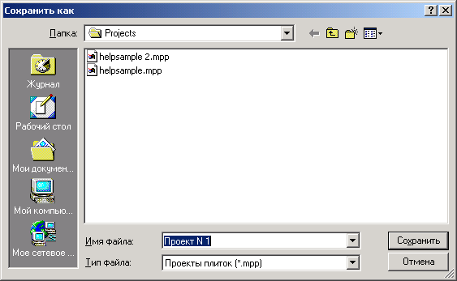

Проект сохранятеся как обычный файл на диске. Меню Проекты ->Сохранить или кнопка Сохранить на панели инструментов.

Ввести имя файла и нажать Сохранить . Файлу присвоится расширение mpp.
В дальнейшем можно открыть проект и работать с ним. Это можно сделать из меню Проекты -> Открыть или кнопкой Открыть.